Boubacar DIALLO Ph.D.
Senior AI-Vision R&D Engineer at Exxact Robotics
Ph.D. in AI and CV from Poitiers University
CEO of TTV : Technology into value
Address: 25 Avenue de Middelkerke,
51200 Épernay, France
Phone: +33 (0)6 63 21 17 13
Email: boubacar.diallo.perso@gmail.com
/
/
/
 /
/
/
/
I was a Senior AI R&D Engineer in the AI/Vision Team at
Exxact Robotics,
where we focused on innovative solutions for precision agriculture.
My current research interests and directions were centered on advancing AI to address real-world challenges,
particularly in the domains of precision agriculture, robotics, and autonomous systems. They included:
Experience at Exxact Robotics :
I have 4+ years of professional experience working with deep learning systems,
data analysis, and robot learning at Exxact Robotics from Jan. 2021 to Feb. 2025.
You can discover HERE all the tasks performed !
Previously, I had the pleasure of working as a Doctoral Researcher (Ph.D.) in the ICONES team of the
ASALI Axis
within XLIM UMR CNRS, - Multidisciplinary Research Institute,
University of Poitiers.
My research focused on Image Integrity Measurement:
From Physical Models to Deep Learning Models, under the supervision of
Prof. Christine Fernandez,
Assoc. Prof. Thierry Urruty,
and Assoc. Prof. Pascal Bourdon.
Before starting my Ph.D., I gained valuable experience as a Research Intern at the XLIM laboratory,
where I collaborated with Assoc. Prof. Clency Perrine
on the project Implementation of a Software-Defined Radio Platform: Application to PAPR Reduction.
Expertise in Data Analysis - AI Model Development and Deployment
General Expertise
- PhD-level experience in relevant fields such as Computer Vision, Machine Learning, AI and Data Engineering.
- Strong ability to conduct independent research and collaborate effectively in a team-oriented environment.
- Proven experience in model workflow, model development, Fine-tuning, and evaluation with large-scale neural networks.
- Proficiency in Python with experience in machine learning frameworks like PyTorch, JAX, or similar.
- Experience working with large codebases on GitHub and distributed computing environments.
Data Processing and Evaluation
- Experience with scalable data engineering toolchains such as SQL, Pandas, NumPy, and FiftyOne for image dataset processing.
- Design and build data and evaluation pipelines and perform training of multi-task deep neural networks.
- Analyze large-scale learning datasets using queries and data processing scripts (analyzing, augmenting, and transforming the data).
- Collaborate with data/annotation engineers to develop automated data pipelines with the FiftyOne App.
- Integrate AI models to automate manual tasks (pre-annotation, active learning tools) while maintaining high data quality.
- Work closely with agronomists and annotation engineers to support new model architectures and dataset requirements.
AI Model Lifecycle and Deployment
- Collaborate with other engineers from product teams to align model development with company goals.
- Ownership of the full model development lifecycle, from data preparation to real-world deployment.
- Develop and implemented novel approaches to model fine-tuning, optimization, and evaluation.
- White-box understanding of deep learning: model details, loss formulations, and training algorithms.
- Design and conduct experiments to better understand model behavior and to identify and mitigate risks.
- Work with cross-functional teams to deploy AI solutions in real-world applications.
- Experience in NN deployment toolchains (ONNX) and techniques such as TensorRT, model quantization/pruning.
Robotics and Simulation
- Experience working with robotic learning systems using simulation tools
- Experience with some physical simulators (e.g. Mujoco, IsaacSim, IsaacLab)
- Passionate about building robot learning systems.
Cloud Infrastructure and AI Scalability
- Experience managing cloud infrastructure with GCP and AWS (Instances, Bucket).
- Familiarity with job scheduling/orchestration tools such as Kubernetes (MLFlow, Kubeflow, ZenML).
AI Safety and Robustness
- Ability to develop novel computer vision models for tasks such as classification, object detection, and segmentation.
- Familiarity with AI safety and robustness challenges in real-world environments (e.g., precision agriculture, real-time applications).
- Understanding of fundamental geometric concepts in computer vision, including perspective transformation and epipolar geometry.
- Thrive in a high pace environment, where solutions are often unclear and require exploration.
💞️ I am passionate about collaborating on projects that have a positive impact on humanity and the planet.
With over ten publications covering topics such as deep learning, digital image tampering detection, artificial intelligence applied
to precision agriculture, and image processing, I strive to contribute meaningfully to these evolving field.
📖 Educator: In addition to my research activities, I am actively engaged in training the next
generation of innovators. I design and publish online courses and offer tutorials to disseminate the latest advances and applications
in my field, thus helping to make knowledge accessible and inspire future talents.
My Publications
Google Scholar and Full List.
2025
Thesis Defense
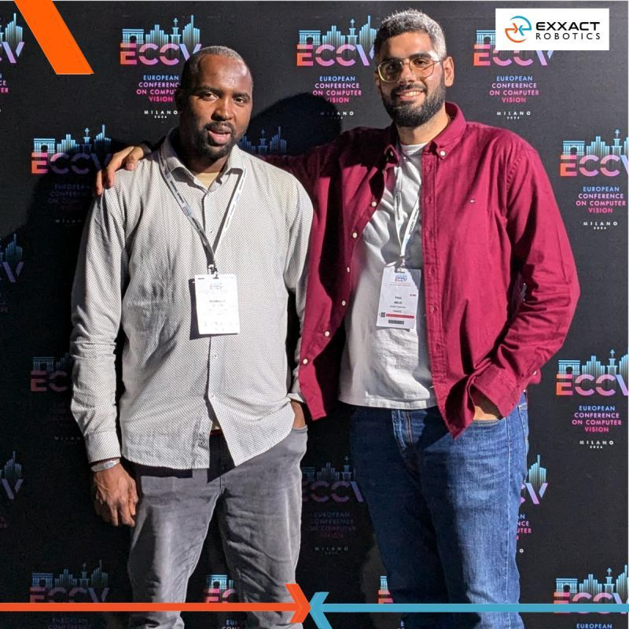
Thesis Supervision: Conformal Prediction for Vision-Based Decision-Making in Agriculture
Melki, P., Bombrun, L., Diallo Boubacar, Dias, J., & Da Costa, J. P.
Defense of the thesis in June 2025
Melki, P., Bombrun, L., Diallo Boubacar, Dias, J., & Da Costa, J. P.
Defense of the thesis in June 2025
Over the course of nearly two and a half years, I had the opportunity to supervise Paul Melki’s CIFRE PhD thesis,
entitled "Contributions to Conformal Prediction for Vision-Based Decision-Making in Agriculture,"
in collaboration with the IMS Laboratory in Université de Bordeaux and EXXACT Robotics.
Working with Paul has always been a real pleasure, filled with rich moments of scientific reflection. I hope that this work will be well recognized by the community and that we have made a meaningful contribution in our own way.
Working with Paul has always been a real pleasure, filled with rich moments of scientific reflection. I hope that this work will be well recognized by the community and that we have made a meaningful contribution in our own way.
ArXiv
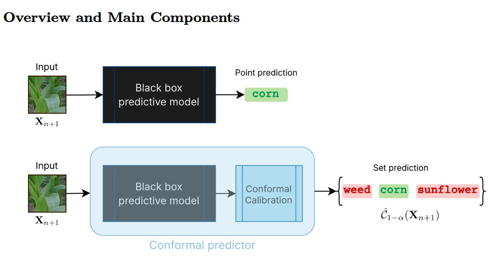
Uncertainty Guarantees on Automated Precision Weeding using Conformal Prediction
Melki, P., Bombrun, L., Diallo Boubacar, Dias, J., & Da Costa, J. P.
arXiv preprint arXiv:2501.07185, 2025. [Paper]
Melki, P., Bombrun, L., Diallo Boubacar, Dias, J., & Da Costa, J. P.
arXiv preprint arXiv:2501.07185, 2025. [Paper]
After a detailed presentation of the conformal prediction methodology and the development of a precision spraying pipeline
based on a ''conformalized'' neural network and well-defined spraying decision rules, the article evaluates this pipeline
on two real-world scenarios: one under in-distribution conditions, the other reflecting a near out-of-distribution setting.
2024
CVPR
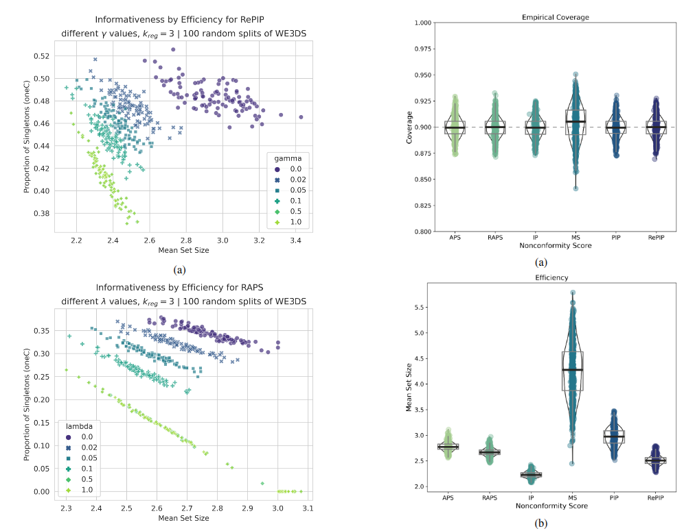
The Penalized Inverse Probability Measure for Conformal Classification
Melki, P., Bombrun, L., Diallo Boubacar, Dias, J., & Da Costa, J. P.
In Proceedings of the Conference on Computer Vision and Pattern Recognition (CVPR), 2024. [Paper]
Melki, P., Bombrun, L., Diallo Boubacar, Dias, J., & Da Costa, J. P.
In Proceedings of the Conference on Computer Vision and Pattern Recognition (CVPR), 2024. [Paper]
Through toy examples and empirical results on the task of crop and weed image classification in agricultural robotics,
the current work shows how PIP-based conformal classifiers exhibit precisely the desired behavior in comparison with
other nonconformity measures and strike a good balance between informativeness and efficiency.
ArXiv
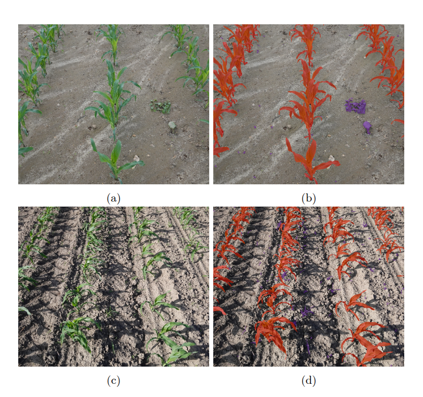
Active learning for efficient annotation in precision agriculture: A use-case on crop-weed semantic segmentation.
van Marrewijk, B. M., Dandjinou, C., Rustia, D. J. A., Gonzalez, N. F., Diallo Boubacar & Blok, P. M..
(ICCV 2023) - ArXiv preprint arXiv:2404.02580, 2024. [Paper]
van Marrewijk, B. M., Dandjinou, C., Rustia, D. J. A., Gonzalez, N. F., Diallo Boubacar & Blok, P. M..
(ICCV 2023) - ArXiv preprint arXiv:2404.02580, 2024. [Paper]
This study addresses this research gap by conducting a comparative study of three active learning-based acquisition functions:
Bayesian Active Learning by Disagreement (BALD), stochastic-based BALD (PowerBALD), and Random.
The acquisition functions were tested on two agricultural datasets: Sugarbeet and Corn-Weed, both containing
three semantic classes: background, crop and weed.
2023
AgriTech
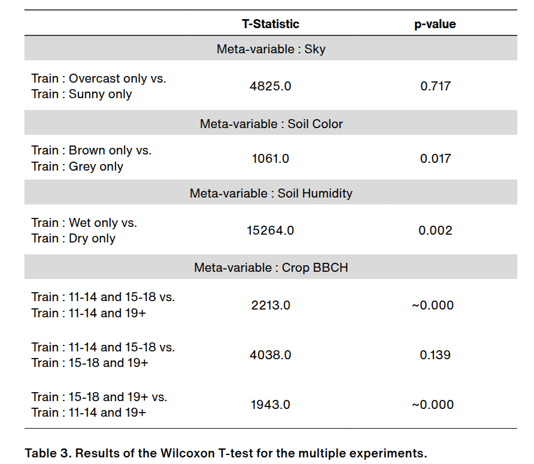
Impact of the Environmental Conditions on the Robustness of a Weed Detection Model
Nicolas Franco Gonzalez, Paul Melki, Boubacar Diallo, Hugo Antoine, Estelle Millet.
AgriTech Day (SIMA), 2023. [Paper]
Nicolas Franco Gonzalez, Paul Melki, Boubacar Diallo, Hugo Antoine, Estelle Millet.
AgriTech Day (SIMA), 2023. [Paper]
The main contribution of this article is the proposal of a methodology for analyzing the impact of this variability
on weed detection quality. We focus only on four intrinsic and external factors that contribute to the variability
of conditions (which we call meta-variables) : the vegetation development stage (using the BBCH scale), the soil
characteristics, namely its color and humidity level, and the condition of the sky at the moment of image acquisition (sunny or overcast).
ICCV
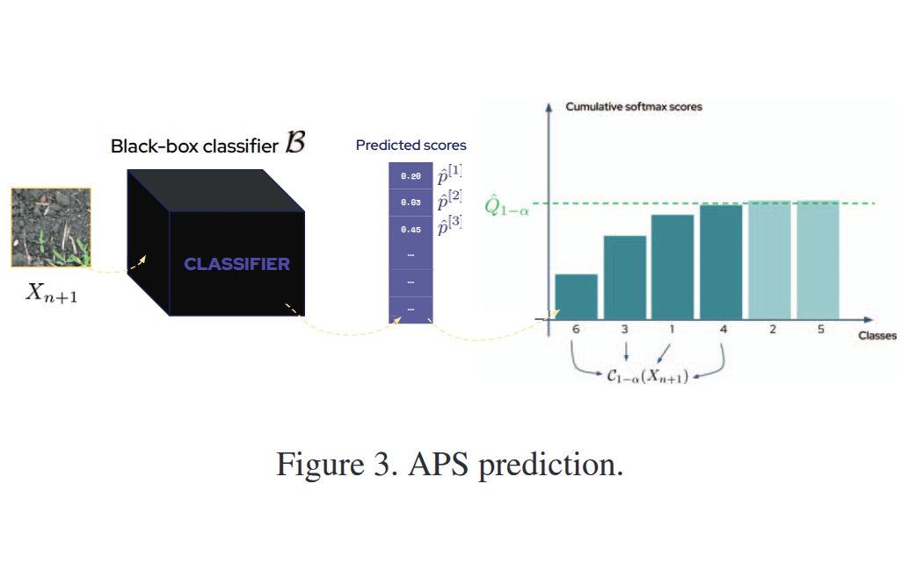
Group-Conditional Conformal Prediction via Quantile Regression Calibration for Crop and Weed Classification
Paul Melki, Lionel Bombrun, Boubacar Diallo, Jérôme Dias, Jean-Pierre Da Costa
Proceedings of the IEEE/CVF International Conference on Computer Vision (ICCV), 2023. [Paper]
Paul Melki, Lionel Bombrun, Boubacar Diallo, Jérôme Dias, Jean-Pierre Da Costa
Proceedings of the IEEE/CVF International Conference on Computer Vision (ICCV), 2023. [Paper]
This article presents the conformal prediction framework that provides valid statistical guarantees on
the predictive performance of any black box prediction machine, with almost no assumptions,
applied to the problem of deep visual classification of weeds and crops in real-world conditions.
ICCV Poster
Active learning for efficient annotation in crop-weed semantic segmentation.
Blok, P. M., van Marrewijk, B. M., Boubacar Diallo, Dandjinou, C., Gonzalez, N. F., Melki, P., ... & Dias, J.
Proceedings of the IEEE/CVF International Conference on Computer Vision (ICCV), 2023. [Paper]
Blok, P. M., van Marrewijk, B. M., Boubacar Diallo, Dandjinou, C., Gonzalez, N. F., Melki, P., ... & Dias, J.
Proceedings of the IEEE/CVF International Conference on Computer Vision (ICCV), 2023. [Paper]
In agriculture, datasets tend to contain more redundant images and imbalanced classes.
Therefore, in this research the added value of active learning was tested on a Corn-Weed dataset.
Three acquisition functions were compared: BALD, PowerBALD and Random.
Both BALD and PowerBALD outperformed Random sampling even when 90.9% of the pixels belonged to the background class.
2022
CEA: Elsevier
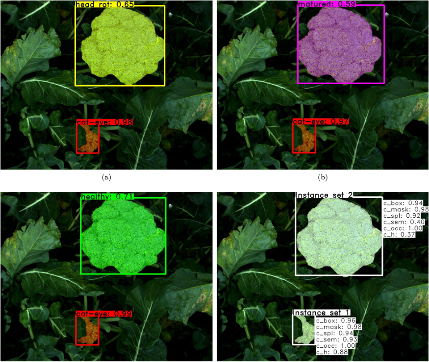
Active learning with MaskAL reduces annotation effort for training Mask R-CNN on a broccoli dataset with visually similar classes
Pieter M Blok, Gert Kootstra, Hakim Elchaoui Elghor, Boubacar Diallo, Frits K van Evert, E. van Henten.
Computers and Electronics in Agriculture, Elsevier (CEA: Elsevier), 2022. [Paper]
Pieter M Blok, Gert Kootstra, Hakim Elchaoui Elghor, Boubacar Diallo, Frits K van Evert, E. van Henten.
Computers and Electronics in Agriculture, Elsevier (CEA: Elsevier), 2022. [Paper]
The goal of our work was to reduce the number of annotated images needed to train a CNN while maintaining its performance.
We use an active learning method capable of automatically selecting difficult-to-classify images and based on the Mask R-CNN
instance segmentation algorithm and named this method MaskAL.
GRETSI
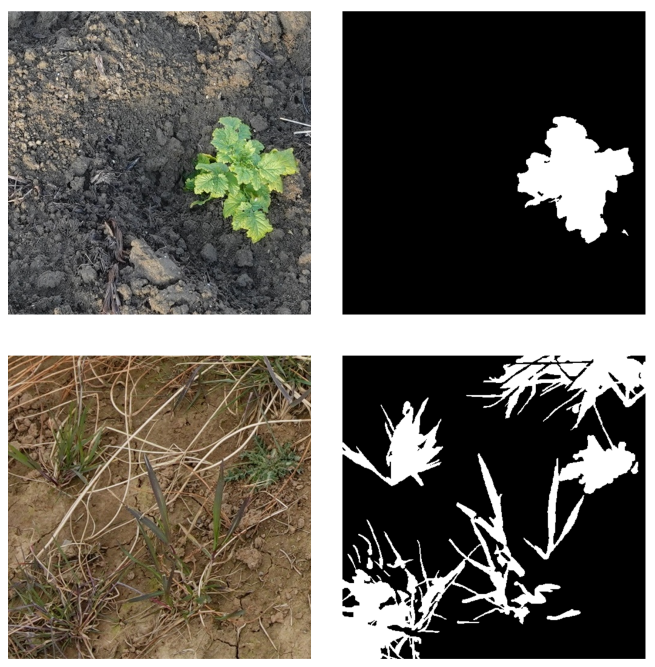
Analyse exploratoire de métriques en segmentation d'images: application en proxidétection
Melki, P., Bombrun, L., Millet, E., Boubacar Diallo, Elghor, H. E., & da Costa, J. P.
In Groupe d'Etudes du Traitement du Signal et des Images (GRETSI), 2022. [Paper]
Melki, P., Bombrun, L., Millet, E., Boubacar Diallo, Elghor, H. E., & da Costa, J. P.
In Groupe d'Etudes du Traitement du Signal et des Images (GRETSI), 2022. [Paper]
Working in an agricultural context, specifically on the problem of the automatic detection of plants in proximal
sensing images, we studied twelve evaluation metrics that we used to evaluate three image segmentation models
recently presented in the literature. After a unified presentation of these metrics, we carried out an exploratory
analysis of their relationships using a correlation analysis, a clustering of variables, and two factorial analyses
(namely principal component analysis and multiple factorial analysis). .
2020
Ph.D Report
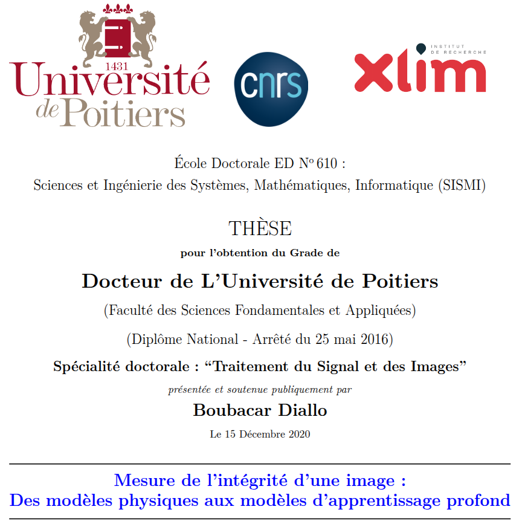
Mesure de l'intégrité d'une image : des modèles physiques aux modèles d'apprentissage profond
Boubacar Diallo, HAL science ouverte, December 2020. [Paper]
Boubacar Diallo, HAL science ouverte, December 2020. [Paper]
In this thesis, we focus on several of these image forensic challenges including camera
model identification and image tampering detection. After reviewing the state of the
art in the field, we propose a first data-driven method for identifying camera models.
We use deep learning techniques based on convolutional neural networks (CNNs)
and develop a learning strategy considering the quality of the input data versus the
applied transformation. A family of CNN networks has been designed to learn the
characteristics of the camera model directly from a collection of images undergoing
the same transformations as those commonly used on the Internet.
FSI
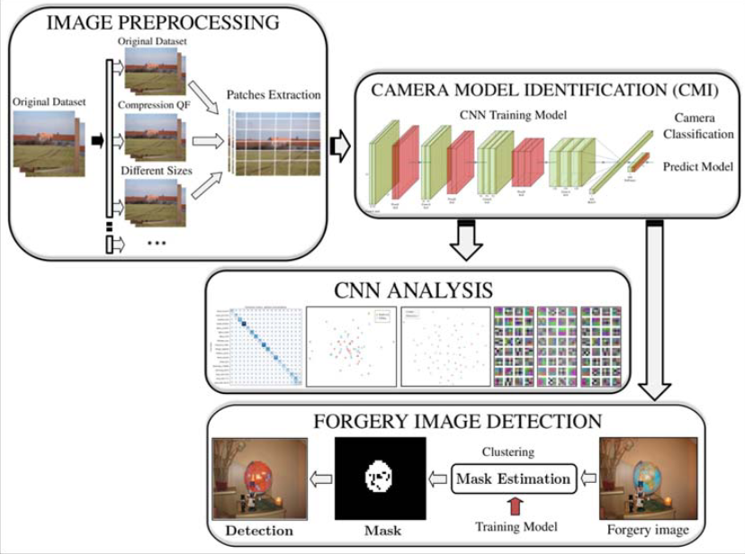
Robust forgery detection for compressed images using CNN supervision
Boubacar Diallo, Thierry Urruty, Pascal Bourdon, Christine Fernandez-Maloigne.
Forensic Science International: Reports (FSI: Reports), 2020. [Paper]
Boubacar Diallo, Thierry Urruty, Pascal Bourdon, Christine Fernandez-Maloigne.
Forensic Science International: Reports (FSI: Reports), 2020. [Paper]
This article presents a framework improving robustness for image forgery detection.
The most important step of our framework is to take into account the image quality corresponding
to the chosen application. Therefore, we relied on a camera identification model based on convolutional
neural networks.
2019
MMM
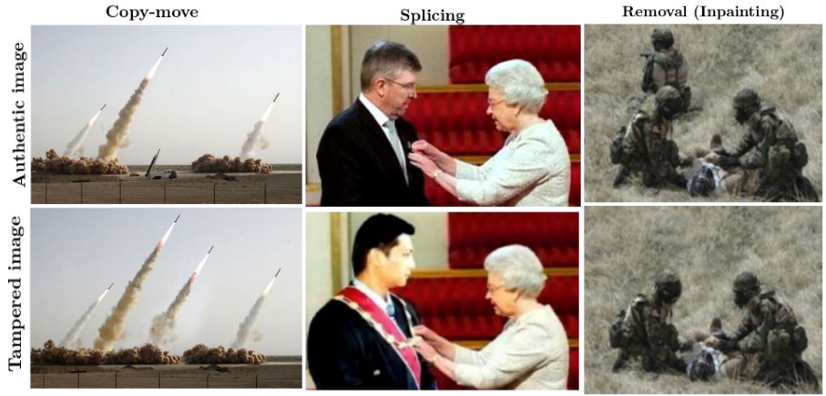
Improving robustness of image tampering detection for compression
Boubacar Diallo, Thierry Urruty, Pascal Bourdon, Christine Fernandez-Maloigne.
MultiMedia Modeling: 25th International Conference (MMM), 2019. [Paper]
Boubacar Diallo, Thierry Urruty, Pascal Bourdon, Christine Fernandez-Maloigne.
MultiMedia Modeling: 25th International Conference (MMM), 2019. [Paper]
Improving the robustness of tampered image detection algorithms is essential for compression manipulation
as it is the most common type of post-processing on the Internet.